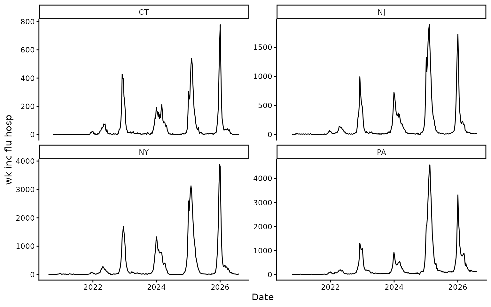
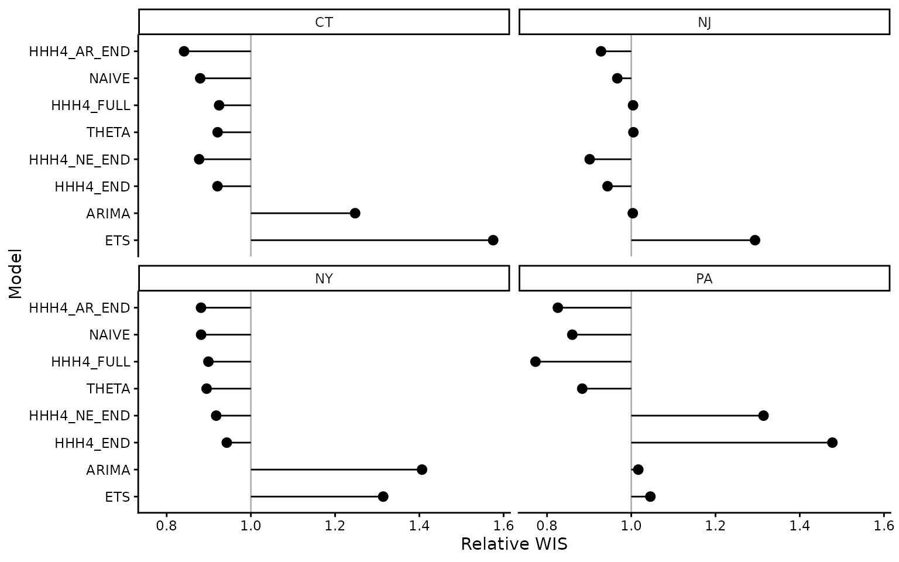
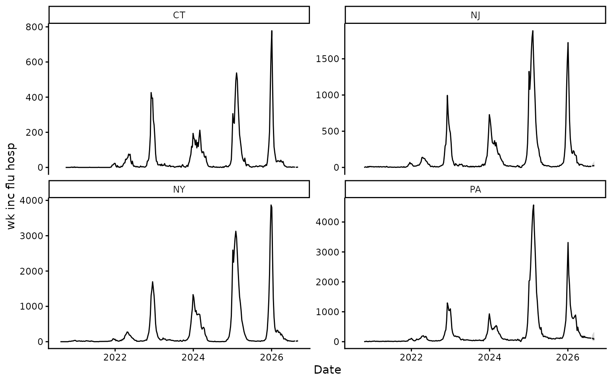

Overview
Most insight.cast models fit each series separately.
HHH4 fits them jointly, so recent counts in one series can help predict
another.
A unit is one key value, such as a state when
key = "location". HHH4 requires one key column and a
meaningful set of connected units.
Model components
HHH4 models the expected count as the sum of three components:
| Component | Uses |
|---|---|
Endemic (end) |
Background incidence, population, and seasonality |
Autoregressive (ar) |
Previous counts in the same unit |
Neighbour (ne) |
Previous counts in connected units |
The example below uses these settings:
| Setting | Meaning |
|---|---|
f = ~1 |
Turn a component on with one effect shared across units |
f = ~-1 |
Turn a component off |
lag = 1 |
Use counts from the previous reporting period |
S = 1 |
Use one smooth annual rise and decline |
family = "NegBin1" |
Allow extra count variability, shared across units |
normalize = TRUE |
Rescale each source row of the neighbour matrix to sum to one |
S = 1 is one seasonal harmonic: a
sine/cosine pair that learns the timing and size of a repeating annual
cycle.
Example
This example forecasts weekly influenza hospital admissions in Connecticut, New Jersey, New York and Pennsylvania. The vignette loads objects fitted to data available on 8 August 2026. Data collection and model fitting remain disabled; the saved plots are rebuilt with the article.
Data
# install.packages("surveillance") # Run once if needed.
library(insight.cast)
library(surveillance)
states <- c("ct", "nj", "ny", "pa")
flu <- get_data(pathogen = "flu", geo_value = states)
flu
#> <insightcast_data>
#> Target: wk inc flu hosp
#> Series: 4 (location)
#> Window: 2020-08-08 to 2026-08-08 (7-day interval)
autoplot(flu)
Weekly influenza hospital admissions by state.
HHH4 needs one count target, one series key, and aligned reporting
dates. For external data, use
check_data(data, key = "location").
Connections and population
Rows of the connection matrix are sources and columns are receiving
units. Here, 1 means that two states share a border.
adjacency <- rbind(
CT = c(CT = 0, NJ = 0, NY = 1, PA = 0),
NJ = c(CT = 0, NJ = 0, NY = 1, PA = 1),
NY = c(CT = 1, NJ = 1, NY = 0, PA = 1),
PA = c(CT = 0, NJ = 1, NY = 1, PA = 0)
)
population <- c(
CT = 3.6e6,
NJ = 9.5e6,
NY = 20.0e6,
PA = 13.0e6
)
population <- population / sum(population)Population is used as an offset, allowing larger states to have a larger background count. All names must match the series key values exactly.
Model specifications
First define one annual cycle for the endemic component:
annual_seasonality <- addSeason2formula(
f = ~1,
S = 1,
period = round(365.25 / flu$interval)
)Compare four component structures:
| Model | Endemic | Autoregressive | Neighbour |
|---|---|---|---|
HHH4_END |
on | off | off |
HHH4_AR_END |
on | on | off |
HHH4_NE_END |
on | off | on |
HHH4_FULL |
on | on | on |
end_control <- list(
ar = list(f = ~ -1),
ne = list(f = ~ -1),
end = list(f = annual_seasonality),
family = "NegBin1"
)
ar_end_control <- end_control
ar_end_control$ar <- list(f = ~1, lag = 1)
ne_end_control <- end_control
ne_end_control$ne <- list(f = ~1, lag = 1, normalize = TRUE)
full_control <- ar_end_control
full_control$ne <- ne_end_control$neCreate the model specifications:
hhh4_models <- list(
HHH4_END = HHH4(
observation,
control = end_control,
population = population
),
HHH4_AR_END = HHH4(
observation,
control = ar_end_control,
population = population
),
HHH4_NE_END = HHH4(
observation,
control = ne_end_control,
neighbourhood = adjacency,
population = population
),
HHH4_FULL = HHH4(
observation,
control = full_control,
neighbourhood = adjacency,
population = population
)
)Compare and forecast
Compare the HHH4 specifications with the default
insight.cast models using the same forecast origins:
models <- c(default_models(), hhh4_models)
set.seed(2026)
cv <- get_cv(
flu,
h = 4,
n_origins = 12,
models = models
)
cv
#> <insightcast_cv>
#> Target: wk inc flu hosp
#> Series: 4 (location)
#> Window: 2020-08-08 to 2026-08-08 (7-day interval)
#> CV: 8 models x 12 origins (h = 4)
autoplot(cv)
Cross-validation performance by model and state.
Passing hhh4_models to get_fcast() refits
all four specifications. The default plot shows their ensemble; set
model to inspect one specification.
fcast
#> <insightcast_fcast>
#> Target: wk inc flu hosp
#> Series: 4 (location)
#> Forecast: 2026-08-15 to 2026-09-05 (h = 4)
#> Models: 4 + ENSEMBLE
autoplot(fcast)Ensemble forecast from the four HHH4 specifications.
autoplot(fcast, model = "HHH4_FULL")
Forecast from the full endemic, autoregressive and neighbour model.
Add a covariate
Add a covariate to the component it affects and supply its values in
control$data. For example, school holidays may affect the
endemic component:
h <- 4L
dates <- seq(
min(flu$data$target_end_date),
max(flu$data$target_end_date) + h * flu$interval,
by = flu$interval
)
school_holiday <- as.integer(format(dates, "%m") %in% c("07", "08"))
holiday_control <- full_control
holiday_control$end$f <- addSeason2formula(
f = ~ 1 + school_holiday,
S = 1,
period = round(365.25 / flu$interval)
)
holiday_control$data <- list(school_holiday = school_holiday)
hhh4_models$HHH4_SCHOOL_HOLIDAY <- HHH4(
observation,
control = holiday_control,
neighbourhood = adjacency,
population = population
)This example treats July and August as school holidays. Time-varying
covariates must cover the observed history and forecast horizon. See
?surveillance::hhh4 for other controls.
Reference
Meyer S, Held L, Höhle M (2017). Spatio-temporal analysis of epidemic phenomena using the R package surveillance. Journal of Statistical Software 77(11), 1–55.